Lec05 深度学习¶
约 2701 个字 55 张图片 预计阅读时间 14 分钟
周晓巍老师过来上的第一门课
课程大纲
- Machine learning
- Linear classifier
- Neural networks
- Convolutional neural networks
- Training neural networks
- Network architectures
Machine Learining¶
What is machine learning¶
传统编程 | Traditional programming
机器学习 | Machine learning
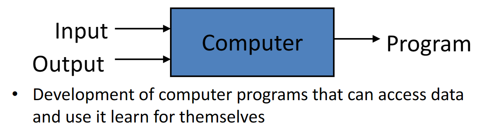
模型 | Model¶
用于描述输入x和输出y之间关系的数学模型。
模型其实就是函数
graph LR
A[输入x] --> B[模型]
B --> C[输出y]问题分类¶
- 回归（Regression）：输出 \(y\) 是连续的。
- 分类（Classification）：输出 \(y\) 是离散的。
What is supervised learning¶
从有标签的数据中学习模型。
- Training: given labeled data, find \(f_W\) (model fitting)
- Testing: given \(f_W\) and a new \(x\), find \(y\) (also called inference)
A simple example - Linear regression
- What is the model?
- 线性表达式
- Why is it called regression?
- \(y\) 是连续的
- What is the training algorithm?
- 最小二乘法
How to solve a problem¶
总流程 | General pipeline¶
- Modeling: describe the problem by a mathematical model
- Training: find the optimal model parameters (model fitting)
- Testing: apply the trained model to new data
分类是基于数据驱动的方法。
- 收集数据集：首先，你需要一个包含图像和对应标签的数据集。图像是我们的输入，标签描述了我们想从图像中获取的信息。例如，在一个狗的品种分类任务中，图像将是狗的图像，标签将是狗的品种。
- 使用机器学习训练分类器：这个步骤涉及到选择一个机器学习模型（例如：决策树、神经网络或支持向量机等）并使用我们的数据集来训练它。模型将学习识别输入图像的特性，并学习如何将它们与特定的标签相关联。
- 在新图像上评估分类器：在这个阶段，我们在训练完模型后，使用一些模型未见过的图像（测试集）来评估模型的性能。这通常涉及到计算一些评价指标，如精度（accuracy）、召回率（recall）或F1值等。
Image classification¶
老师的Slide从下面摘的
Linear classifier¶
输入：猫猫的图片，输出：类别是猫。 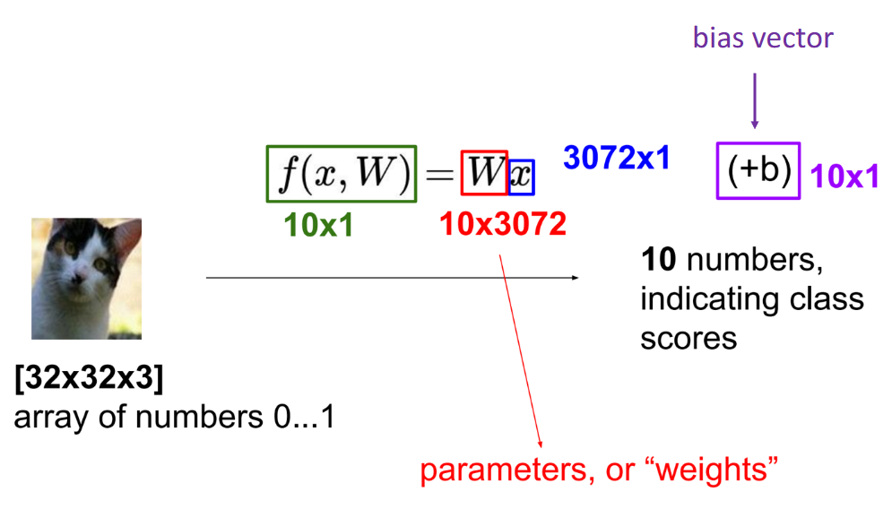
An Image classifier is hard to define
- Unlike e.g. sorting a list of numbers
- No obvious way to hard-code the algorithm for recognizing a cat or other classes
矩阵内积什么时候最大？
在这列和图像数据很像的时候。所以分类器就是找和图像最相近的那列，得到最大值，输出为分类结果。
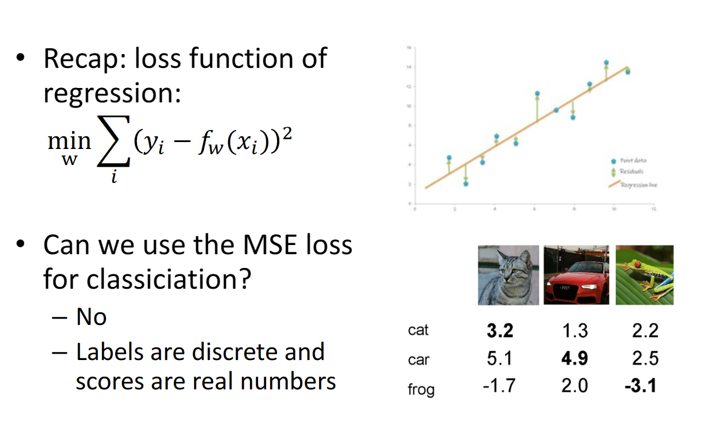
在图像分类时为什么不能用最小二乘？
因为通过线性分类器得到的数并不是一个介于0~1的数，而可能无穷大或无穷小。这可能导致误差太大，即使是对的预测。
Softmax function¶
所以我们将其转化为介于0~1的数，表现为概率。
Cross-entropy loss¶
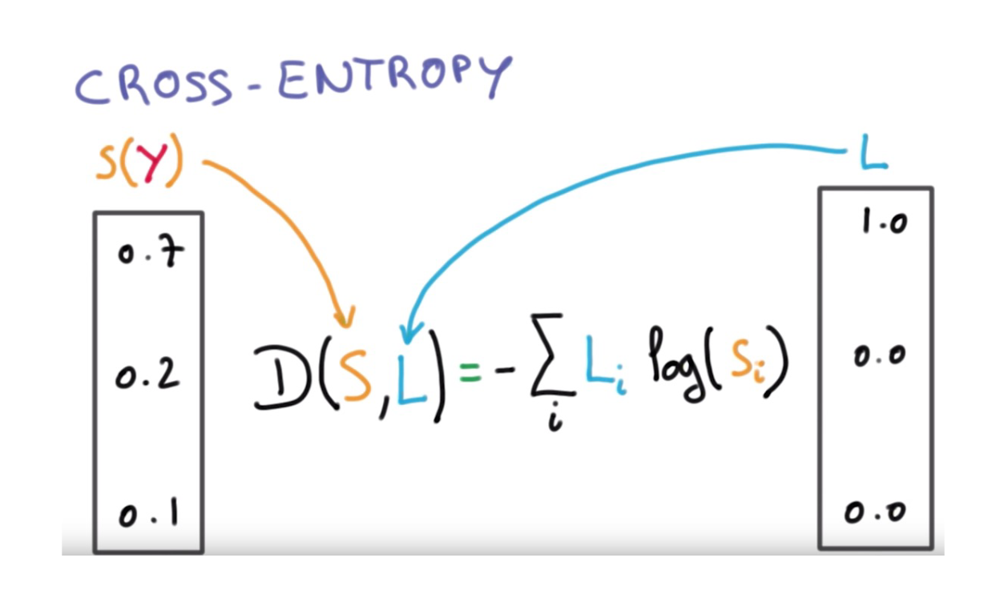
Neural networks¶
Perceptron¶
对线性分类器来说，其图形化表述为：
但很多时候，我们的数据可能不能被线性分割
Activation function¶
为了可适应非线性性数据，我们可以添加一个非线性转换 \(\sigma\)，这被称作 激活函数（activation function）。例如 ReLU 和 Sigmoid。
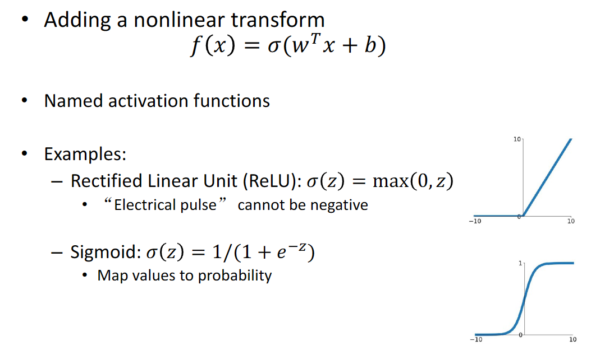
Neural networks – multi-layer perceptron¶
多分类问题
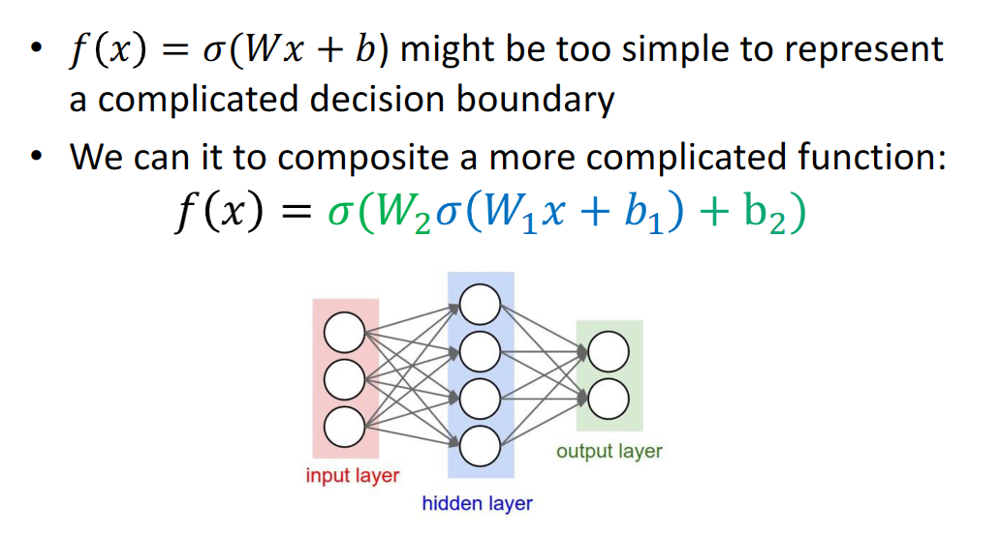
What will happen if there is no activation functions?
这样就和一层的线性分类器没有区别了
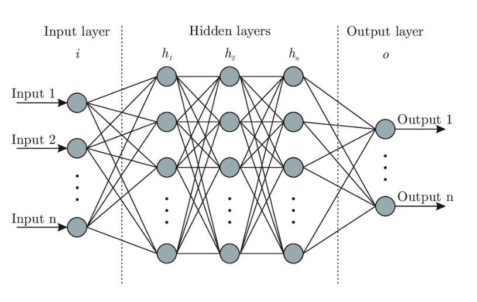
Deep Neural networks¶
深度神经网络就是有很多层的神经网络，可以表示更复杂的函数
层数越多越好吗？
- 参数越多意味着需要学习更多 需要更多的数据
-
训练变得更加困难 “梯度消失”
梯度消失问题（Vanishing Gradient Problem）是神经网络，尤其是深层神经网络在训练过程中常见的一个问题。它指的是在神经网络的训练过程中，当误差梯度（gradient）被反向传播回网络的输入层时，梯度的值变得非常小，甚至接近于零，导致网络权重的更新非常缓慢或者几乎不更新，这使得网络很难继续学习或者完全无法收敛到一个好的解。
Fully connected layer | 全连接层¶
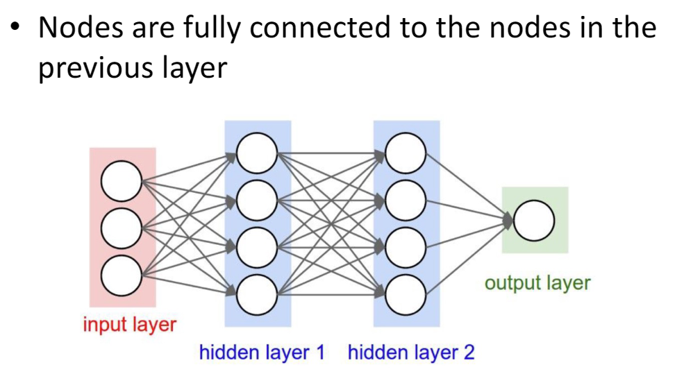
全连接层具有大量的权重。其表达式为 \(f(x)=\sigma(Wx+b)\)
- 深度网络通常具有许多层和潜在的百万参数。
如果参数过多会导致什么问题？
需要越多的训练数据，训练难度大
如何减少参数数量？
卷积神经网络
Convolutional neural networks¶
CNN¶

CNN = a multi-layer neural network with convolution layers
我们可以通过局部特征来推断图像，并不需要全连接。
我们可以通过猫猫的局部特征看出来这是猫猫
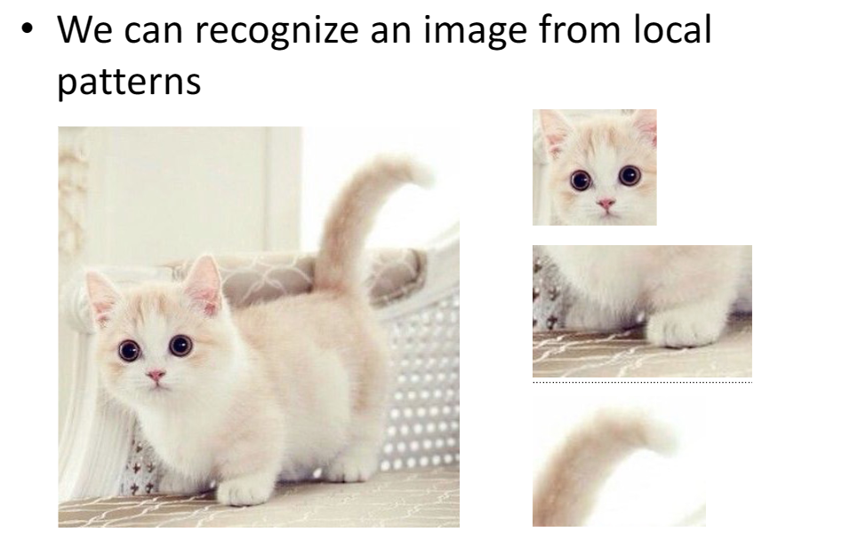
此时，我们的权重数量下降，如下图：
这里三个权重是共享的。
局部连接 + 权重共享 = 卷积！
图片中的过程可以表述为
Convolution¶
2D convolution¶
这里的 Size 指的是边长 \(5-3+1 = 3\)
Padding & stride¶
-
Padding: adding zero pixels around the border
-
Stride: step size larger than 1 in convolution（如果为2，就是做一次，跳过一个再做）
Output :(ImageSize – FilterSize + Padding * 2) / Stride + 1
Padding = 1, Stride = 2
\(OutputSize = (5-3+1*2)/2+1 =3\)
RGB-3通道卷积¶
可以分别卷积
也可以用三通道的卷积核进行卷积：
参数量真的比全连接少了很多
本来要3072，现在要 \(5*5*3+1=76\)个，这里的 \(1\) 意味着偏置量。
Layer types¶
卷积层（Convolutional Layers）：卷积层是CNN的核心。它使用卷积核（也称为过滤器）来提取输入数据中的特征，例如图像中的边缘、纹理等。卷积操作有助于减少参数数量，从而提高网络的计算效率和泛化能力。
池化层（Pooling Layers）：池化层用于降低卷积层输出的空间分辨率，同时保留关键信息。常见的池化操作包括最大池化和平均池化。
全连接层（Fully Connected Layers）：全连接层位于CNN的顶部，通常用于分类任务。这是我们将要深入探讨的层级。
Convolutional layer (including activation function)¶
- Input: image
- Output: feature map (activation map)
- Parameters: filter
可以不止做一次卷积，得到多个特征图。

为什么要多层呢？我们之前看猫猫，可以看猫猫的头，也可以看猫猫的脚，进行判断。我们可以不止判断一个特征，所以需要多层。
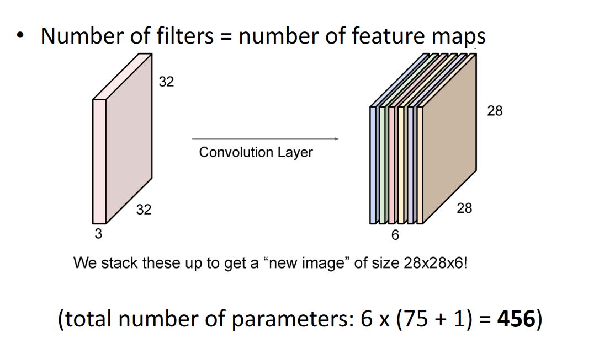
Convolution neural network(CNN)¶
Receptive fields | 感受野¶
卷积神经网络每一层输出的特征图（feature map）上的像素点映射回输入图像上的区域大小。通俗点的解释是，特征图上一点，相对于原图的大小，也是卷积神经网络特征所能看到输入图像的区域。
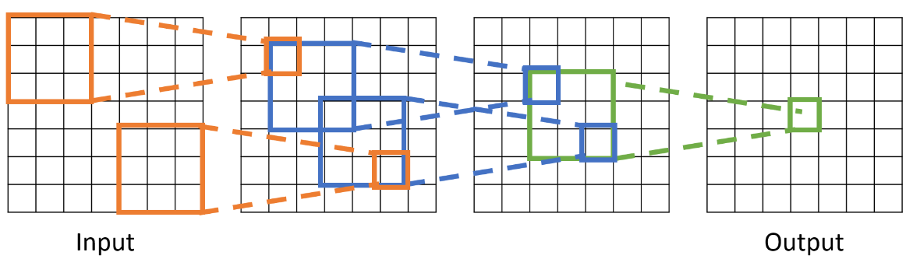
就是最右边的那一格像素和原图中多少像素有关。
For successive convolution with \(K\) kernel size and \(L\) layers, the receptive field is \(1 + L * (K – 1)\)
上图中 \(K=3,L=3\) ，感受域为 \(1+3*2=7\)
Pooling layer¶
池化：将滤波器在不同位置的输出进行合并，用来整合特征。
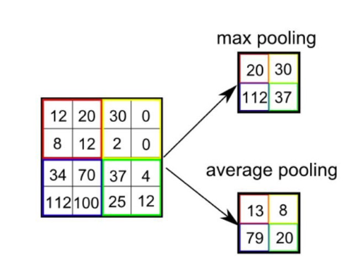
池化操作符有：最大池化，平均池化
为什么要进行池化？
- 聚合空间信息
- 使特征图变得更小、更易处理（更容易卷积了）
加上 Pooling 的 CNN¶
Fully-connected layer¶
CNN最后要全连接层是因为全连接层能够整合卷积和池化层提取的特征，并将其映射到最终的输出类别。全连接层可以帮助网络学习特征之间的复杂关系，并最终对输入进行分类或回归预测。
Training neural networks¶
训练：找到网络权重 \(w\)，使得真实训练标签 \(y_i\) 和预测标签 \(f_w(x_i)\) 之间的误差最小化，即
例如：
- 对于回归问题使用 L2 损失
- 对于分类问题使用交叉熵损失
怎么优化呢？
- 通过梯度下降进行最小化(前提是 \(f\) 可微分)
- 这种训练方法称为反向传播(back-propagation)
Training CNN with gradient descent¶
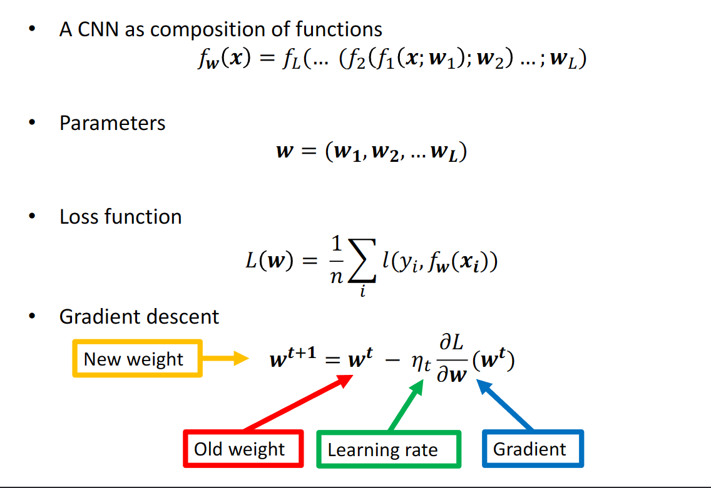
Backpropagation¶
Stochastic gradient descent | SGD¶
有时训练数据集太大，例如 ImageNet 中有数百万张图片，使用梯度下降的话，在每次迭代中计算所有图片的损失和梯度代价太高。
此时我们采用随机梯度下降——仅计算在随机抽取的一批图像上的损失和梯度
参数设置¶
炼丹调参调的就是这个
-
超参数
- 使用多少层？
- 每层使用多少过滤器？
- 最佳的 batch 大小和学习率是多少？
-
我们如何设置它们？
- 一个选择：尝试它们所有，并查看哪个效果最佳
怎么判断预测的准确率？¶

- idea 1 太拟合自己的数据集了
- idea 2 太拟合 test 的数据集了
- idea 3 好，在train上训练，在validation上调参，在test上判断效果。
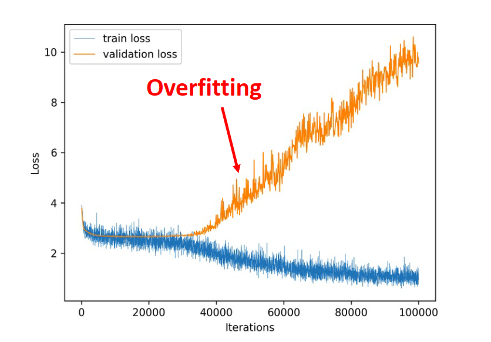
Data augmentation¶
- 数据增强：通过对训练数据进行随机变换，如旋转、翻转、缩放等，来生成更多的训练样本。这有助于提高模型的泛化能力，减少过拟合。

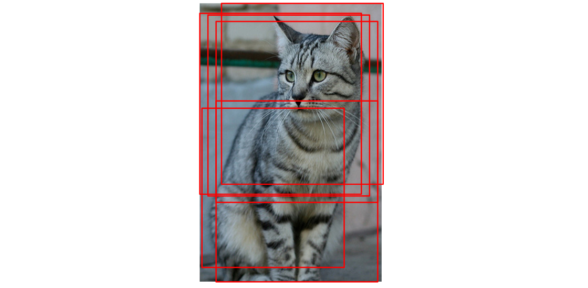
Deep learning frameworks¶
- TensorFlow
- PyTorch
- Caffe
Network architectures | 网络架构¶
AlexNet¶
AlexNet 是一个深度卷积神经网络，由 Alex Krizhevsky、Ilya Sutskever 和 Geoffrey Hinton 设计。它是第一个在 ImageNet 数据集上取得成功的深度学习模型，赢得了 2012 年 ImageNet 大规模视觉识别挑战赛的冠军。
ResNet¶
为什么添加网络层数会导致性能下降？
- 观察到恒等映射，即 \(f(x)=x\)，在网络中的表现不佳
ResNet 是由微软研究院的 Kaiming He 等人提出的一种深度卷积神经网络架构。ResNet 通过引入残差模块（residual block）来解决深度神经网络训练过程中的梯度消失问题，使得网络可以训练更深。
现在，我们学的\(F(x)\)实际上是输入和输出的差值，即残差。
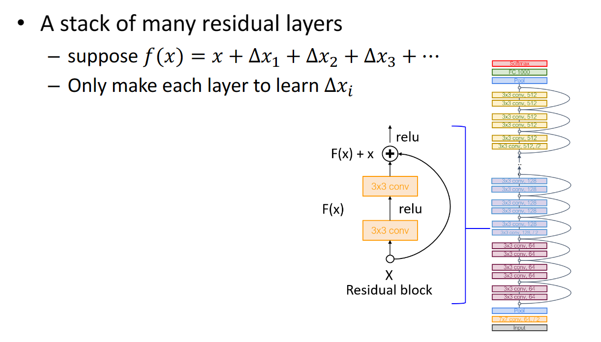
残差网络由多个残差块组成，每个残差块包含两个卷积层和一个跳跃连接。跳跃连接将输入直接添加到输出，从而使得网络可以学习残差映射。
Why deep learning is powerful¶
深度学习是端到端的学习，不需要人工特征提取。
Applications¶
Semantic segmentation | 语义分割¶
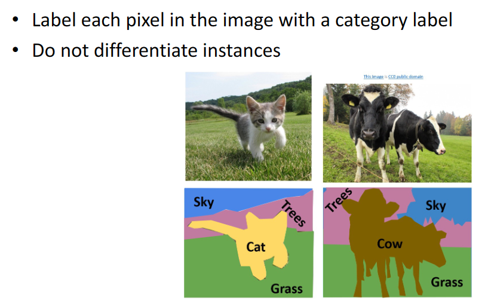
Sliding window¶
Slide window 的方法：以像素为中心，取一个窗口，然后进行分类。
用 Slide window 的方法，效果不好：效率低，感受域小
Fully convolutional network | 全卷积网络¶
全卷积网络（FCN）：将全连接层替换为卷积层，使得网络可以接受任意大小的输入图像，并输出相同大小的预测图像。
这样做的好处是，我们可以一次性预测所有像素，而不是一个像素一个像素的预测。
Object detection | 目标检测¶
输入：图像，输出：图像中的物体的Bounding Box（边界框）和类别
R-CNN¶
Faster R-CNN¶
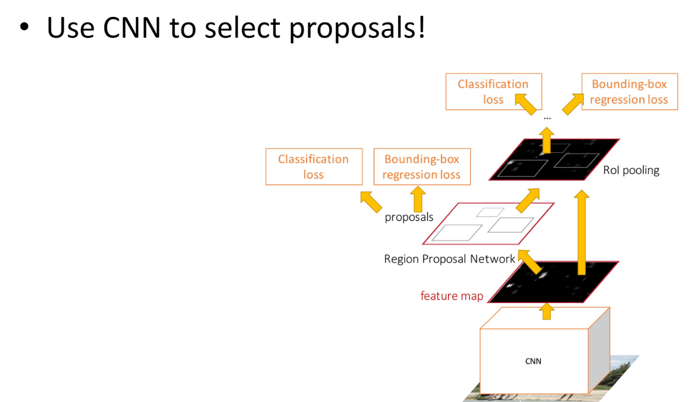
YOLO¶
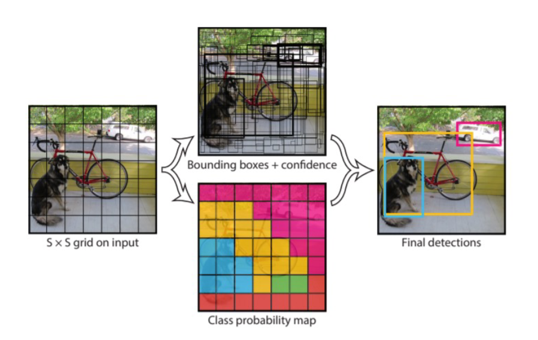